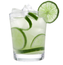

The caipirinha, man. This indispensable icon of Brazilian beach culture...- Anthony Bourdain
As with a lot of Cliassic Cocktail this drink is used as a tonic for the common cold.
Around 1918 in Portugal a popular recipe made with lemon, garlic, and honey was said to be made for patients with the Spanish flu. Another story is that the Caipirinha is based on Poncha, an alcoholic drink from Madeira made from sugar cane.
It is likely a mix of the two accounts.
Substitute Vodka for a Caipiroska.